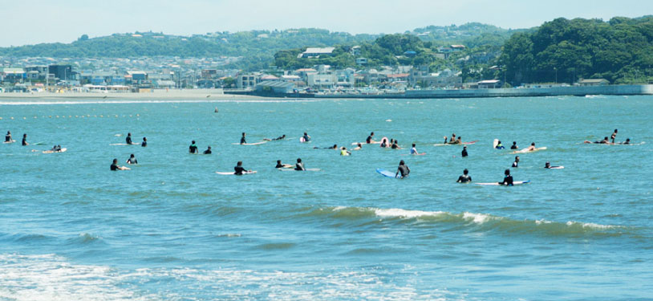

가마쿠라는 일본 가나가와현에 위치한 역사적인 도시로, 일본 중세 시대의 정치 중심지였습니다.
아름다운 사찰과 신사, 그리고 고요한 해변이 어우러져 있어 관광객들에게 인기 있는 여행지입니다.
웅장한 가마쿠라 대불과 고즈넉한 사찰들, 아름다운 해변이 여러분들을 기다리고 있습니다.
역사와 자연이 어우러진 가마쿠라에서 잊지 못할 추억을 만들어 보시는 건 어떨까요?
가마쿠라의 매력을 직접 느끼며 특별한 여행을 경험해 보세요.
즐거운 여행 되시길 바랍니다!
일본 하면 도쿄, 오사카, 교토가 생각나시나요?
일본의 수도 바로 옆에 여유로운 분위기가 흐르는 가마쿠라가 있습니다.
일본의 고대 수도인 가마쿠라는 요코하마 근처에 있는 아름다운 해변 도시입니다.
가마쿠라는 도쿄에서 당일치기로 다녀올 수 있는 곳으로, 따뜻한 날씨가 특징인 일본을 대표하는 고도입니다.
교토처럼 일본의 전통을 흠뻑 느낄 수 있는 관광지이면서, 온천을 즐길 수 있는 하코네나 후지산에 가기도 수월합니다.
태평양의 선물인 해산물이나 가마쿠라 야채라 불리는 신선한 식재료를 사용한 요리를 시내 곳곳에서 맛볼 수 있습니다.
또, 삼면이 산으로 둘러 쌓여있고 바다와도 접해있어 산과 바다, 역사와 문화가 공존하는 분위기를 느낄 수 있습니다.
바다와 산의 아름다운 자연환경과 유구하고 매혹적인 역사유산을 가진 가마쿠라는 가나가와에서 가장 아름다운 문화 중심지 중 하나이며 절, 신사, 계절 축제들로 가득 차 있습니다.
ꕀ ꕀ ꕀ ꕀ ꕀ ꕀ 𖠳 ᐝ ꕀ ꕀ ꕀ ꕀ 𖠳 ᐝ ꕀ ꕀ ꕀ ꕀ 𖠳 ᐝ ꕀ ꕀ ꕀ ꕀ 𖠳 ᐝ ꕀ ꕀ ꕀ ꕀ 𖠳 ᐝ ꕀ ꕀ ꕀ ꕀ ꕀ ꕀ
가마쿠라의 주요 상징인 고토쿠인의 가마쿠라 대불은 일본에서 유명한 명소 중 하나입니다.
이 청동 불상은 높이가 11.3m에 달하고 무게는 120톤을 넘어가며, 일본에서 두 번째로 높은 청동 불상으로 알려져 있습니다.
주인공은 아미다 부처로, 중생을 깨달음의 세계로 인도하는 역할을 합니다.
가마쿠라 대불은 내부로 직접 들어가 구경할 수 있어 관광객들에게 큰 인기를 끌고 있습니다.
가마쿠라 대불은 연중 내내 많은 관광객들이 방문하는 인기 있는 명소이지만, 특히 봄이나 가을철에는 자연의 아름다움과 대불의 높은 영향력을 더욱 깊이 느낄 수 있습니다.
주소: 4 Chome-2-28 Hase, Kamakura, Kanagawa 248-0016, Japan
슬램덩크라는 애니메이션의 배경이 되었던 가마쿠라 고등학교 앞에 있는 역, 코코마에역!
코코마에 역은 가마쿠라 관광의 중심지 중 하나로, 이 역은 일본의 광고, 드라마, 애니메이션 등에서 빈번하게 등장하여 한국인들에게도 친숙한 곳입니다.
특히 '슬램덩크'에서는 주인공 강백호가 반한 여자 채소연이 강백호에게 손을 흔들어주는 장면으로 유명한 곳이기도 합니다.
가마쿠라를 방문하는 관광객들에게 꼭 추천하는 관광 열차인 '에노덴'이 지나갈 때 타이밍 맞춰서 사진 찍는 사람이 많기도 합니다.
옆 앞에선 시치리하마 해변이 펼쳐진 느긋한 풍경을 즐길 수도 있습니다.
주소: 1 Chome-1 Koshigoe, Kamakura, Kanagawa 248-0033, Japan
가마쿠라 코마치 거리에 있는 토모야(ともや)입니다.
경단이나 컵 또는 콘에서 선택할 수 있는 소프트아이스크림 등 다양한 먹거리를 판매하고 있어 길을 걸으며 즐기기 딱 좋은 곳입니다.
그중에서도 추천하는 메뉴는 상냥한 표정을 띄는 대불의 얼굴을 모티브로 한 “대불사마야끼(大仏さま焼き)"입니다.
앙이나 커스터드, 두꺼운 베이컨 치즈 등 다양한 팥소가 있는 것이 매력이기도 합니다.
또한, 각각 다른 운세를 지니고 있는 팥앙금 「건강운」, 커스터드 「인기운」, 자색고구마 앙금 「금운」 등 다양한 선택지가 있어 재미있게 즐길 수 있습니다.
주소: 1 Chome-6-8 Yukinoshita, Kamakura, Kanagawa 248-0005, Japan
가마쿠라의 명물 시라스를 활용한 음식들로 유명한 곳입니다.
이곳에서는 시라스 덮밥이나 시라스의 튀김을 비롯한 다양한 해산물 요리를 즐길 수 있습니다.
가마쿠라의 신선한 해산물의 맛을 제대로 느낄 수 있는 곳으로, 가마쿠라의 대표적인 음식점 중 하나입니다.
이 식당은 매일 아침 직송되는 시라스를 비롯하여, 미사키 양식장에서 새롭게 잡힌 신선한 생선을 매일 구입하여 회로 만든다고 합니다.
생선의 신선함과 풍미를 그대로 전달해 주는 이 음식점은 가마쿠라 여행 중에 꼭 방문해 보아야 할 곳 중 하나입니다.
주소: 2 Chome-7-28 Komachi, Kamakura, Kanagawa 248-0006 Japan

가마쿠라시에 본점을 둔 화과자점 '도시마야'가 제조, 판매하는 비둘기 모양의 사브레 쿠키입니다.
1949년에 처음 제조 및 판매가 된 비둘기 모양 사브레 쿠키는 가마쿠라를 넘어 관동의 기념품으로도 인기가 많으며,
가마쿠라에서 가장 인기 있는 특산물로 많은 사랑을 받고 있습니다.
독특한 모양과 맛 덕분에 많은 사람들에게 인기를 끌고 있으며, 가마쿠라를 방문한 관광객들의 기념품은 물론 선물로도 자주 선택되는 특산물입니다
주소: 2 Chome-11-19 Komachi, Kamakura, Kanagawa 248-0006, Japan
바다마을 가마쿠라에서 즐길 수 있는 색다른 경험, 서핑은 어떠신가요!
사실 가마쿠라는 일본의 비치발리볼과 서핑의 발상지라고 합니다.
봄과 10월에는 파도가 가장 좋아서 서핑을 즐기기에 최적의 시기이며, 바다 근처에 서핑 클래스도 다양하게 마련되어 있어 초보자들도 쉽게 즐길 수 있습니다.
서핑 외에도 스탠드업 패들 보드, 웨이크보드, 플라이보드, 바다 카약 등 다양한 해양 스포츠를 즐길 수 있습니다.
가마쿠라를 방문한다면 한 번쯤 이러한 활동을 체험해 보는 것도 좋을 것 같습니다.
주소: 4 Chome Yuigahama, Kamakura, Kanagawa 248-0014, Japan
일본의 화과자를 만들 수 있는 체험 클래스입니다.
체험 클래스는 예약제이며, 클래스 종류도 다양합니다!
가마쿠라 테마리에서는 계절에 맞는 화과자, 새로운 창작 화과자를 직접 손으로 만드는 즐거움을 전하고 있습니다.
일본 최초의 무가 정권 '가마쿠라 막부'의 탄생지인 역사의 도시, 가마쿠라에서 일본의 전통 과자인 화과자를 직접 만들어보는 경험도 좋은 경험이지 않을까요!
주소: 28-35 Sakanoshita, Kamakura, Kanagawa 248-0021, Japan